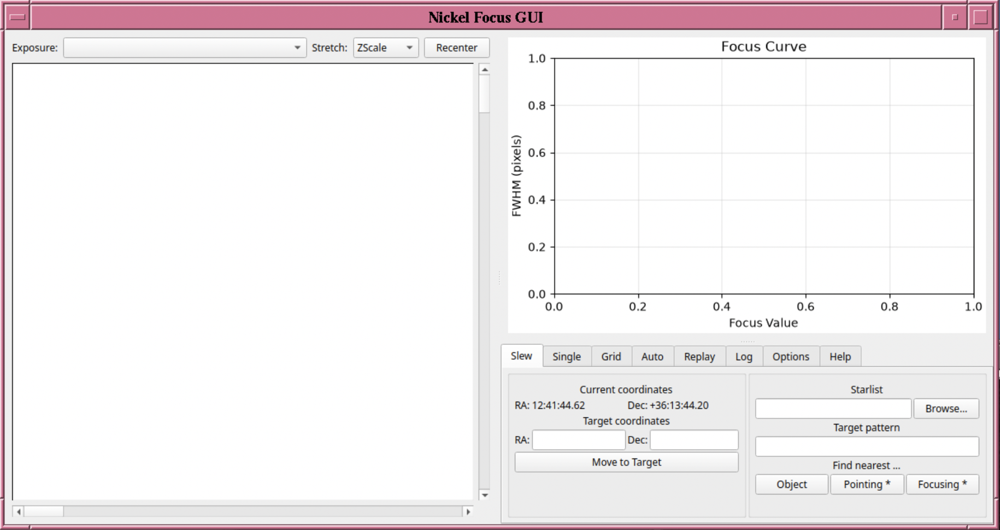
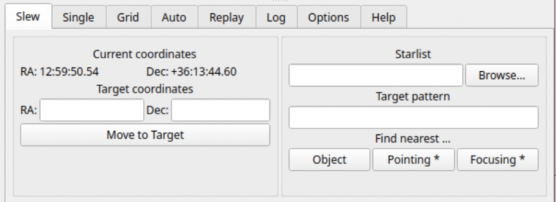
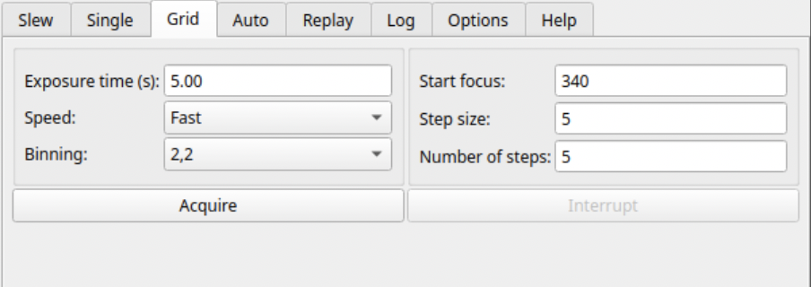
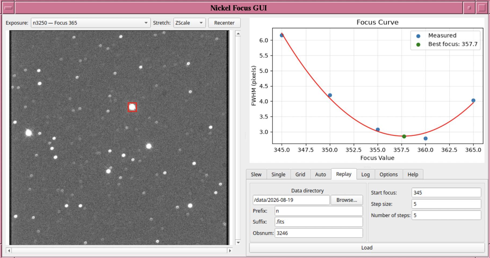

The Nickel Focus GUI automates focusing the telescope. The GUI allows you to slew the telescope to a nearby focus star and take a sequence of exposures at different focus values. The images are automatically analyzed to measure the FWHM of the brightest star in the field and build up the focus curve. Once the sequence is finished, a quadratic function is fit to the curve to find the best focus.
Starting the Focus GUI
To start the software from the observing computer, select it from the observer dropdown menu, or type the command nickelfocus in a terminal on nandor.

The window has three panels. The current exposure is displayed on the left; the focus curve (FWHM versus focus value) is at the upper right; and the controls, organized in tabs, are at the lower right. The dividers between the panels can be dragged to resize them. The Log tab shows the current status, the most recent step, and a running history of everything the GUI has done.
Only a single command that moves the telescope, adjusts the focus, or uses the camera can run at a time. When a slew or a focus sequence is in progress, the buttons that would start another are disabled.
The GUI talks to the telescope and camera through KTL. If it cannot connect to the KTL package (either there is an access error or the GUI is being run on a machine without KTL installed), the tabs that would normally control the telescope or the camera (Slew, Single, Grid, and Auto) will all be grayed out and inaccessible. The Help tab has a short summary of the purpose of each tab.
Slewing to a focus star: The Slew Tab
The left side of the Slew tab shows the telescope's Current coordinates; these are updated once a second. To acquire a target with known coordinates, enter a sexagesimal RA and Dec under Target coordinates (e.g., 05:30:00 and +20:15:00) and press Move to Target. The status line on the Log tab reports when the telescope arrives or why the move could not be made. You must enable movement and tracking (using POCO) to control the telescope via the GUI.
The right side allows you to quickly find a target near the telescope's current position, and the target coordinates will be updated for you. Typically, you will use the Focusing * button, which finds the nearest focus star. You can also use Pointing * to find the nearest pointing star. These stars are selected from a catalog of stars that comes with the software. You can also search your own starlist instead: Enter the file location under Starlist (or use Browse…), optionally enter part of an object name under Target pattern, and press Object. The name and coordinates of the target found are shown in the status line; check them, then press Move to Target.


Focusing: The Grid, Auto, and Single Tabs
The Grid, Auto, and Single tabs all take new exposures. Each one provides the same exposure settings on its left side: Exposure time (s), readout Speed (Slow or Fast), and Binning (1,1, 2,2, or 4,4). We recommend you always use the Fast mode for focusing.
There are two ways to take a focus sequence:
- Grid takes exposures at evenly spaced focus values: a Start focus, a Step size, and a Number of steps (at least 3).
- Auto searches for the best focus. It starts at Start focus, moves by Step size, decides from the first few exposures which direction improves the image, and keeps stepping until it has passed through the best focus. It stops after taking 3 exposures beyond the exposure that yielded the minimum FWHM, or when it hits the maximum number of focus steps (set by Max steps), whichever comes first. Because it follows the curve, the focus values may not be taken in order.


When each exposure is written to disk, it is shown in the image panel with a red box around the star being measured, the measured FWHM is added to the focus curve, and the Log tab reports the step number, focus value, FWHM, and star position. Once there are three or more points, a quadratic fit and its minimum are drawn on the curve. When the sequence finishes, the status line reports the best focus and the expected FWHM there (Figure 4). If the star's position in one exposure is inconsistent with the others, its box is yellow and labeled "Outlier centroid," and its point is drawn differently on the curve. You should check the exposure that yielded the outlier before trusting the fit.


By default, the brightest star in each exposure is measured. To measure a different star, hover the mouse over it in the image panel (left) and press the m key. The FWHM is remeasured using that star for each exposure in the sequence; the FWHM values and best-fitting curve are updated based on the new measurements. The image panel also has an Exposure drop-down menu (top left) which can be used to step through every exposure in the sequence (listed in order of focus value). You can also change the image stretch using the Stretch dropdown menu (ZScale, Min/Max, Sqrt, Log, Asinh), zoom the image using the mouse wheel, and refit the image to the window using Recenter.
The Single tab takes one exposure at the given Focus value. After a sequence finishes, the focus value is set to the fitted best focus, so pressing Acquire without changing it moves the telescope to best focus and takes an image that can be used to confirm the best focus. Of course, you can enter a different value to test any other focus.
Re-analyzing a sequence using on-disk images: The Replay Tab
The Replay tab analyzes a focus sequence that is already on disk, without using the telescope or camera. Assuming you save the focus images (they are saved by default), you can use this tab to reanalyze the focus sequence. Enter the Data directory (or use Browse…), the file name Prefix and Suffix (by default n and .fits; you will likely not need to change these), and Obsnum, the observation number of the first exposure in the sequence. Then enter the Start focus, Step size, and Number of steps the sequence was taken with (you will need to note these in the observing log; they are not kept in the file headers), and press Load. The exposures are expected to be numbered consecutively, starting at Obsnum; this "Replay" option may fail when reanalyzing data taken with the "Auto" sequence. The results are displayed exactly as for a live sequence, and the m key can be used to measure a different star. (The "Replay" tab was used to construct Figure 4.)
The Options tab has one setting, Remember settings between sessions; this will likely be removed in future versions such that settings will always be saved. When it is checked, the Slew tab's starlist and target pattern, the settings on the Single, Grid, Auto, and Replay tabs (except the Single tab's focus value), and the image stretch are saved when the GUI is closed and restored the next time it starts. Unchecking it erases any saved settings when the GUI is closed.
Troubleshooting
Every error is reported in the status line on the Log tab and added to the log history below it; unexpected errors also include the full Python traceback. When you encounter a problem, please provide the full Python traceback to help developers determine the issue.
| Symptom or message | Likely cause | What to do |
|---|---|---|
| Slew, Single, Grid, and Auto tabs are grayed out, or "no ktl connection is available" | The GUI could not connect to the telescope and camera. | Close the GUI and restart it, making sure you followed the start-up instructions above; otherwise contact a Support Astronomer. |
| "Could not move to target: Telescope movement is disabled!" or "Tracking is disabled!" | The telescope is not set up to accept a slew. | Check that telescope movement and tracking are enabled, then try again. |
| "Telescope is not ready to move to a new target!" or "Telescope failed to make it to target within 5 min." | The telescope is busy, or the slew did not complete. | Check the telescope status, then try again. |
| "Stopped early -- not enough points for a focus fit" | Fewer than three exposures were measured, e.g., after Interrupt. | Run the sequence again with more steps (and possibly a different starting focus). |
| The fit or curve looks wrong or a box is yellow ("Outlier centroid") | The wrong star, or different stars in different exposures, were measured. | Hover over the correct star and press m. |
| "Expected to find the following files, but they are not available" | The expected file names (constructed using the provided directory, file prefix/suffix, Obsnum, and the number of steps) do not match the files on disk. | Correct the entries on the Replay tab. |
If a problem persists and you need immediate support, contact a Support Astronomer or Telescope Technician. To report problems that you can work around for the time being or to request specific features, please submit an issue on GitHub.
Support Astronomers (sa@ucolick.org) Last modified: Sun Nov 1 2026